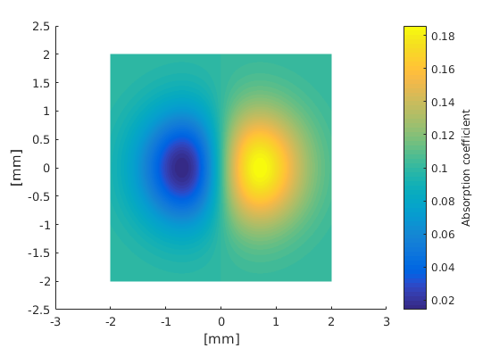
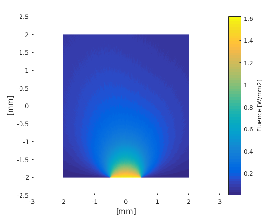
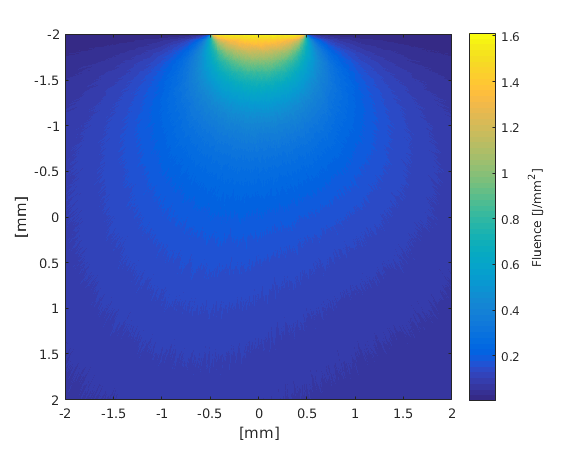

Working with pixel format data: pixeltest.m
Often imaging data is provided in pixel format. However, as ValoMC uses triangles as the basis elements, the data are not directly compatible. This example demonstrates how to move between the two formats.
Contents
Creating a 2d mesh for pixel data
To create a mesh that can be easily mapped to a pixel grid the function createGridMesh can be used
clear all; x_arr = -2:0.01:2; y_arr = -2:0.01:2; vmcmesh = createGridMesh(x_arr, y_arr); % function provided by ValoMC % createGridMesh will create a mesh with the following mapping between % x_arr and y_arr % % The mesh that is created has the following structure % % o-------o--------o % | | | % | x2 | x4 |c1 % | | | % o-------o--------o % | | | % | x1 | x3 | % | | | % o-------o--------o % % o = mesh coordinates % x = x_arr, y_arr point % % The triangular mesh is constructed in the following fashion % % 3--b1---6--b2---9 % | . t6 | . t8 | % b9 . | . b4 % | t2 . | t4 . | % 2-------5-------8 % | . t5 | . t7 | % b8 . | . b5 % | t1 . | t3 . | % 1---b7--4---b6--7 % % t_i = triangle % b_i = boundary element % numbers = vertex indices % % Note that there are two triangles for each grid point (x_arr,y_arr) % and the order of the triangle indices. This means that when using one % dimensional indexing to assign values to the medium, the assignments must be % repeated assign values to the lower triangles. vmcmedium = createMedium(vmcmesh);
Accessing grid elements using one dimensional indexing
Create example data in pixel format
[X,Y] = meshgrid(x_arr,y_arr); % MATLAB function F = ((X.*exp(-X.^2-Y.^2)) +1)*0.2-0.1; % Note that since there are twice as many triangles as there are grid % cells, medium.absorption_coefficient is twice as big as F vmcmedium.scattering_coefficient = 0.1; vmcmedium.absorption_coefficient = repmat(F(:),2,1); % repeat F twice vmcmedium.scattering_anisotropy = 0.9; vmcmedium.refractive_index = 1; figure; patch('Faces', vmcmesh.H, 'Vertices',vmcmesh.r, 'FaceVertexCData', ... vmcmedium.absorption_coefficient, 'FaceColor', 'flat', 'EdgeColor','none'); xlabel('[mm]'); ylabel('[mm]'); c = colorbar; % create a colorbar c.Label.String = 'Absorption coefficient'; vmcboundary = createBoundary(vmcmesh, vmcmedium); % create a boundary for the mesh % Create a light source lightsource = findBoundaries(vmcmesh, 'direction', [0 0], [0 -5], 1); vmcboundary.lightsource(lightsource) = {'cosinic'}; solution = ValoMC(vmcmesh, vmcmedium, vmcboundary);
ValoMC-2D -------------------------------------------- Version: v1.0b-118-g853f111 Revision: 131 OpenMP enabled Using 16 threads -------------------------------------------- Initializing MC2D... Computing... ...done Done
Visualize the solution
figure; patch('Faces', vmcmesh.H, 'Vertices',vmcmesh.r, 'FaceVertexCData', ... solution.element_fluence, 'FaceColor', 'flat', 'EdgeColor','none'); xlabel('[mm]'); ylabel('[mm]'); c = colorbar; % create a colorbar c.Label.String = 'Fluence [W/mm2]';
Accessing elements using two dimensional indexing
To avoid having to perform all assignments two times, optionally the medium can be defined using two-dimensional indexing. If two dimensional indexing is used, ValoMC will assume that createGridMesh has been used to create the mesh. In addition to the solution.element_fluence, ValoMC will return solution.grid_fluence, which represents the fluence in each grid cell. It is calculated as an average of the the two triangles in a grid cell.
clear vmcmedium; % destroy the previous medium structure clear boundary; vmcmedium.scattering_coefficient = 0.1; vmcmedium.absorption_coefficient = F; % two dimensional array vmcmedium.scattering_anisotropy = 0.9; vmcmedium.refractive_index = 1; vmcboundary = createBoundary(vmcmesh, vmcmedium); lightsource = findBoundaries(vmcmesh, 'direction', [0 0], [0 -5], 1); vmcboundary.lightsource(lightsource) = {'cosinic'}; solution = ValoMC(vmcmesh, vmcmedium, vmcboundary);
ValoMC-2D -------------------------------------------- Version: v1.0b-118-g853f111 Revision: 131 OpenMP enabled Using 16 threads -------------------------------------------- Initializing MC2D... Computing... ...done Done
Visualize the solution as a pixel map
It is convenient to use imagesc to visualize the solution returned in grid_fluence.
figure imagesc(x_arr, y_arr, (solution.grid_fluence), [min((solution.grid_fluence(:))) ... max((solution.grid_fluence(:)))]); xlabel('[mm]'); ylabel('[mm]'); c = colorbar; % create a colorbar c.Label.String = 'Fluence [J/mm^2]';